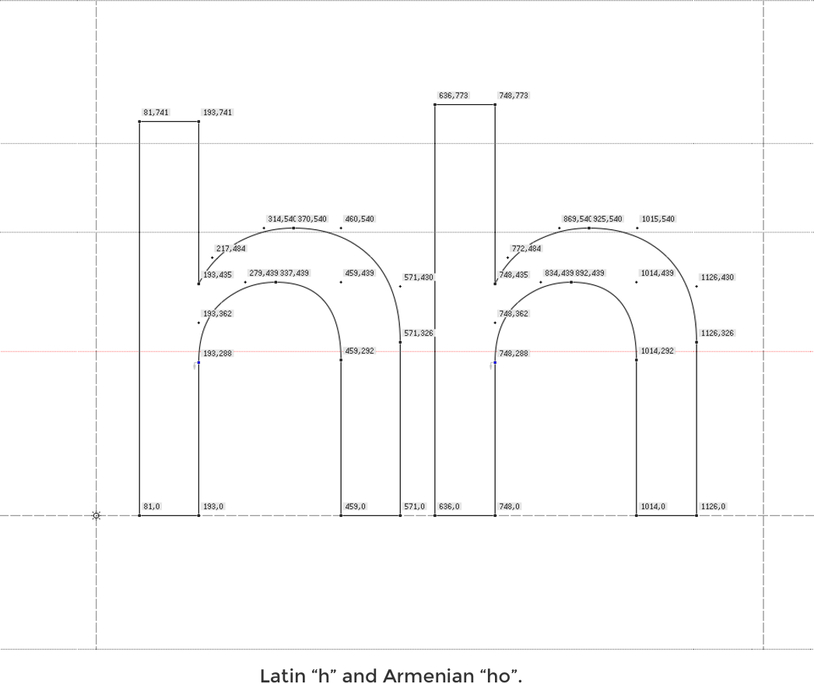

Վասիլ Ա-ն նպատակ դրեց ստեղծել հունա-հռոմեական կամ բյուզանդական իրավունքի մի ընդհանուր օրենսգիրք, որտեղ ժամանակագրական կարգով շարադրված լինեն կայսրերի հրապարակած
39
new lettersնոր տառեր
30
ligaturesլիգատուրաներ
մն ԹՅ
The old posters and signs in the traditional neighborhood of Buenos Aires called Montserrat inspired me to design a typeface that rescues the beauty of urban typography from the first half of the twentieth century. The goal is to rescue what is in Montserrat and set it free, under a free, libre and open source license, the SIL Open Font License.
The original Montserrat Font Family is created by Julieta Ulanovsky.
Armenian letters are added by Vahan Hovhannisyan.
A B C D E F G H I J K L M N O P Q R S T U V W X Y Z
a b c d e f g h i j k l m n o p q r s t u v w x y z
Ա Բ Գ Դ Ե Զ Է Ը Թ Ժ Ի Լ Խ Ծ Կ Հ Ձ Ղ Ճ Մ Յ Ն Շ Ո Չ Պ Ջ Ռ Ս Վ Տ Ր Ց Ւ Փ Ք Օ Ֆ
ա բ գ դ ե զ է ը թ ժ ի լ խ ծ կ հ ձ ղ ճ մ յ ն շ ո չ պ ջ ռ ս վ տ ր ց ւ փ ք և օ ֆ
Ես իմ անուշ Հայաստանի արևահամ բարն եմ սիրում,
Մեր հին սազի ողբանվագ, լացակումած լարն եմ սիրում,
Արնանման ծաղիկների ու վարդերի բույրը վառման,
Ու նաիրյան աղջիկների հեզաճկուն պա՛րն եմ սիրում։
Difference 1: Latin and Armenian letters have different proportions
In Armenian alphabet most of the letters have ascender and descender and several letters take the whole font height. Because of that, when the eyes read text in Armenian, it focuses on the full height, unlike the Latin, where the eye focuses on the font body.
That’s why the attitude to ascender and descenders is slightly different and they have to be a little longer.
So I increased the ascender height of the Armenian letters by 32pt and increased the descender height by 33pt.
Thus, making these small changes, I made it more readable for Armenian.

Difference 2: In Armenian caps and lowercases don’t have any height difference
Because in Armenian uppercase and lowercase letters are very much different by their graphema, where’s no need in using the Cap Line. This means that caps are ending on the ascender height line.
These changes are related to the Armenian letters only. I made it more readable in Armenian without changing the font DNA.